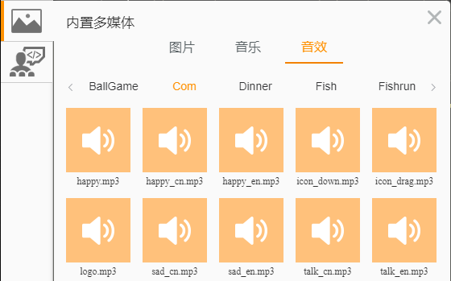

音乐与音效¶
音乐和音效¶
音乐一般至一段特定旋律的声音，比如一段曲子，一首歌。而音效则往往是一段声音的片段，比如敲击的声音，提示音等等，一般时间较短。
LeapJS提供了一系列的音乐音效的方法，用于控制音效的播放。在编辑环境中，提供了一系列的音效和音乐，可以直接使用。

将鼠标移到各个音效上，等待片刻，即可试听各个音效。在项目中，选取合适的音乐和音效，可以让项目表现力提升不少。如果是音乐项目，那么音乐和音效更是不可或缺的内容了。
播放 play¶
如果只是简单的想要播放一段音乐或者音效，那么使用play(src)就可以了，src是音乐的链接地址，以后后面都带有音乐的格式。
play(src, *loop);
// src: 音乐链接地址
// loop: 可选， 是否重复播放，默认为false
实例：播放一段音乐
play("https://rss.leaplearner.com/a/16/gameBG.mp3");
如果想让一段音乐重复播放，我们只要在play方法后增加一个参数true就可以了。
play(src, true)
实例：重复播放一个音效
play("https://rss.leaplearner.com/a/1/ansRight.mp3", true);
如果音乐已经在播放了，那么再次使用play方法只会继续播放当前音乐，效果和使用一次play是相同的。
支持的音效列表¶
只要是浏览器支持的音乐音效，都可以使用以上方法进行操作。不同浏览器及不同系统对音乐音效的格式支持情况不一致。为了项目能够在所有平台上都顺利运行，我们应该选取一些常用的音乐格式。
| 音频格式 | Chrome | Firefox | IE9 | Opera | Safari |
|---|---|---|---|---|---|
| OGG | 支持 | 支持 | 支持 | 支持 | 不支持 |
| MP3 | 支持 | 不支持 | 支持 | 不支持 | 支持 |
| WAV | 不支持 | 支持 | 不支持 | 支持 | 不支持 |
一般提供ogg和mp3格式，就可以支持所有主流浏览器了。
音频格式知识普及¶
Ogg：全称应该是OGGVobis(oggVorbis)是一种新的音频压缩格式，类似于MP3等的音乐格式。Ogg是完全免费、开放和没有专利限制的。OggVorbis文件的扩展名是.OGG。Ogg文件格式可以不断地进行大小和音质的改良，而不影响旧有的编码器或播放器。
MP3：是一种音频压缩技术，其全称是动态影像专家压缩标准音频层面3（Moving Picture Experts Group Audio Layer III），简称为MP3。它被设计用来大幅度地降低音频数据量。利用 MPEG Audio Layer 3 的技术，将音乐以1:10 甚至 1:12 的压缩率，压缩成容量较小的文件，而对于大多数用户来说重放的音质与最初的不压缩音频相比没有明显的下降。
WAV：为微软公司(Microsoft)开发的一种声音文件格式，它符合RIFF(Resource Interchange File Format)文件规范，用于保存Windows平台的音频信息资源，被Windows平台及其应用程序所广泛支持，该格式也支持MSADPCM，CCITT A LAW等多种压缩运算法，支持多种音频数字，取样频率和声道，标准格式化的WAV文件和CD格式一样，也是44.1K的取样频率，16位量化数字，因此在声音文件质量和CD相差无几！
各种关联：wav格式音质最好，但是文件体积较大。mp3压缩率较高，普及率高，音质相比wav要差。ogg与mp3在相同位速率(Bit Rate)编码的情况下，ogg体积更小，并且ogg是免费的不用交专利费。